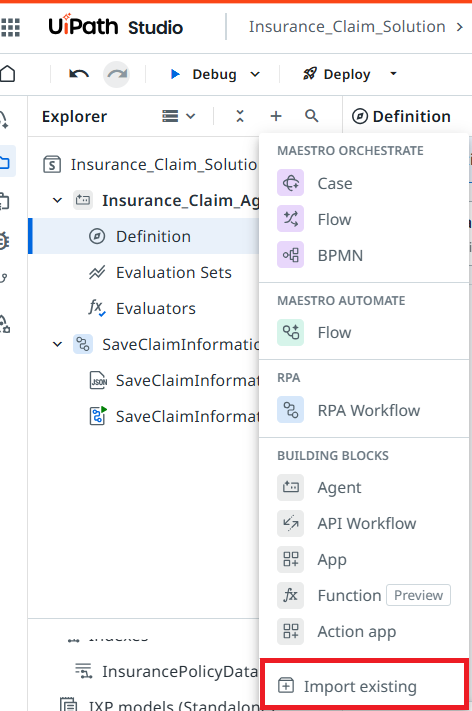
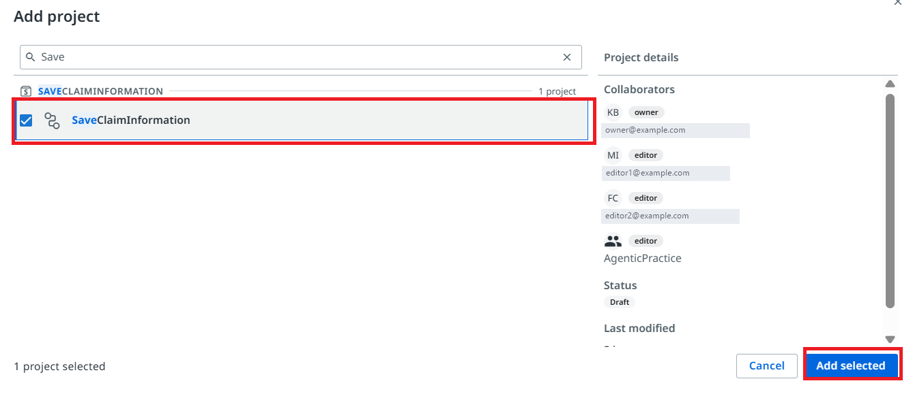
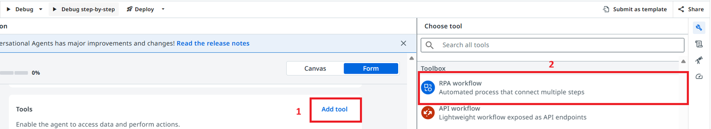
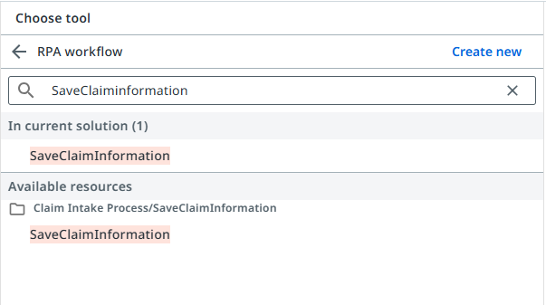
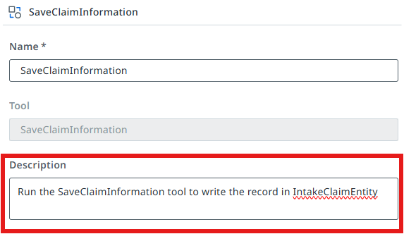
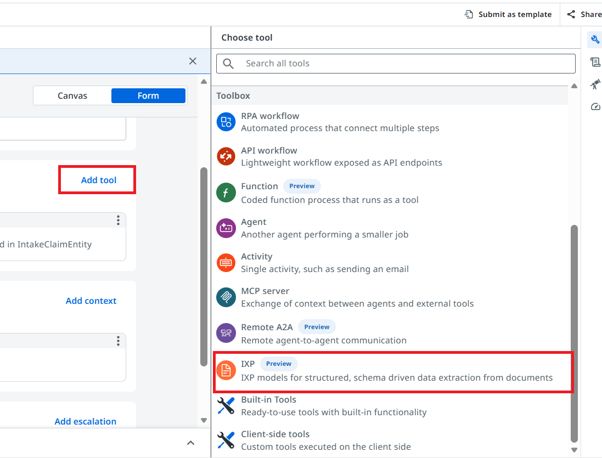
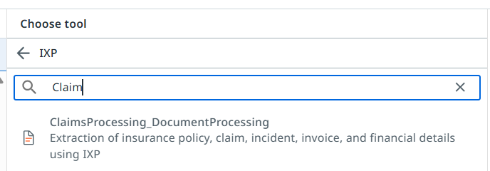
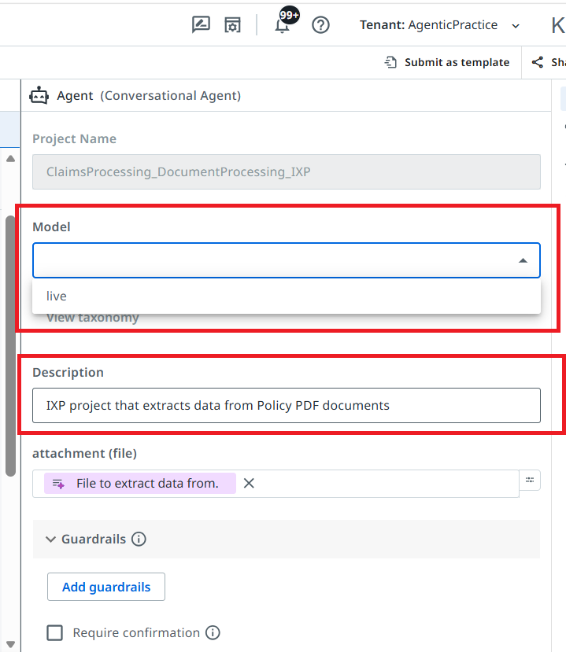

Tools
Tools let the agent act instead of only talk. Yours needs two: an RPA workflow that writes the finished claim into Data Fabric, and an IXP project that extracts data from the uploaded claim document.
Import SaveClaimInformation into the solution
The agent's save tool is the SaveClaimInformation RPA workflow. Bring it into your solution first: in the Explorer click + and choose Import existing.

In Add project search for SaveClaimInformation, tick SaveClaimInformation and click Add selected. It now appears in the Explorer next to Insurance_Claim_Agent.

Add the RPA workflow tool
Under Tools click Add tool, then choose RPA workflow in the Toolbox.

Search for SaveClaimInformation and select SaveClaimInformation from the Claim Intake Process folder (under Available resources).

Keep the name, type the description below, and review the input arguments — each one needs a clear description so the agent knows what to pass.
Run the SaveClaimInformation tool to write the record in IntakeClaimEntity| Argument | Description |
|---|---|
in_ClaimID | Unique claim ID generated by the agent |
in_PolicyNumber | Policy number of the claimant |
in_CustomerName | Full name of the claimant |
in_ClaimAmount | Total claim amount in USD |
in_IncidentType | Type of incident |
in_IncidentDescription | Description of the incident |
in_ClaimFile | Uploaded claim file, or null if skipped |
in_PolicyStatus | Policy status |
in_CoverageType | Coverage type |
in_CoverageLimit | Coverage limit |

SaveClaimInformation.Add the IXP tool
Click Add tool again and choose IXP (Preview) — schema-driven data extraction from documents.

Search for Claim and select ClaimsProcessing_DocumentProcessing — Extraction of insurance policy, claim, incident, invoice, and financial details using IXP.

Leave the project name, open the Model dropdown and choose live, then type the description. The attachment input is bound to the file the user uploads in chat.
IXP project that extracts data from claim PDF documents
ClaimsProcessing_DocumentProcessing_IXP with Model = live.